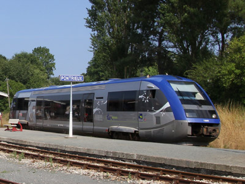

Ferrovia - 30 Mai 2012 - Mise à jour 12 Décembre 2014
X 73500 - X 73900 - ATER
L'X 73500 est un autorail monocaisse bimoteur conçu pour le transport régional.
Il dispose d'un plancher bas dans la partie centrale de la caisse, les groupes moteur-convertisseur sont en porte-à-faux sous les cabines de conduite. Il est équipé pour rouler à un agent seul (caméras et écrans sur les pupîtres).
Après des essais en 1999, les X 73500 ont été construits à 312 exemplaires jusque 2004. Mais la série compte désormais 318 engins suite au rachat de six autorails 2100 CFL (Chemins de Fer Luxembourgeois).
L'X 73900 est étroitement dérivé de l'X 73500 mais possède les équipements de sécurité lui permettant de rouler en Allemagne. Le parc est possédé en partage par l'Alsace, la Lorraine et le Land de Sarre dont les deux exemplaires sont peints en rouge, livrée similaire aux VT 641 de la DB.
19 exemplaires ont été livrés entre 2001 et 2004.
Quelques données techniques
Constructeur : Alstom DeDietrich
Motorisation : 2 x 6 cylindres en ligne MAN D 2866 LUH 21, cylindrée : 12L, 257 kW à 2000tr/mn
Transmission : convertisseur hydraulique Voith.
Disposition des essieux porteurs et moteurs : 1A-A1
Puissance totale : 700ch
Vitesse max : 140 km/h
Aptitude à l'UM avec d'autres X 73500 jusque trois autorails.
Longueur : 28,90 m
Masse à vide : 48t
Dispositions particulières : Les X 73752 à 55 dédiés à la ligne des Horlogers (Besançon-La Chaux de Fonds) sont équipés du système de sécurité Integra Signum, indispensable pour rouler en Suisse.
Pour plus d'info :
La fiche X 73500 sur Wikipedia
Fiche technique des X 73500 de Florent Brisou
L'inventaire des X 73500 et X 73900 sur Trains du Sud-Ouest
Un X 73500 Pays de Loire non identifié arrive à Ste Pazanne (18/06/2005)
L'X 73558 Alsace à Strasbourg (23/10/2004)
Deux X 73500 Auvergne à Clermont-Ferrand (02/06/2004)
L'X 73658 Champagne Ardennes à Reims (04/06/2004)
L'X 73595 Picardie frotte au Tréport (14/05/2006)
L'X 73561 en livrée Kaléidoscope Rhône Alpes à Lyon Vaise (09/02/2008)
L'X 73803 Languedoc Roussillon, au terminus d'un Mende-La Bastide St Laurent (20/05/2009)

L'X 73605 Bretagne, à Pontrieux (08/08/2013)
Nord Pas de Calais a cédé ses X 73500 à l'Auvergne. L'Aubrac n'est plus en rame tractée mais formé des X 73768 et 73763, à St Flour (21/08/2012)
L'X 73773 Aquitaine au Buisson (25/05/2015)
Les X 73727 et 73718 Midi-Pyrénées à Toulouse (21/06/2015)
L'X 73587 mène une UM3 d'Alès à Nîmes (20/03/2013)
Les X 73901 Alsace et 73912 Lorraine à Strasbourg (23/10/2004)